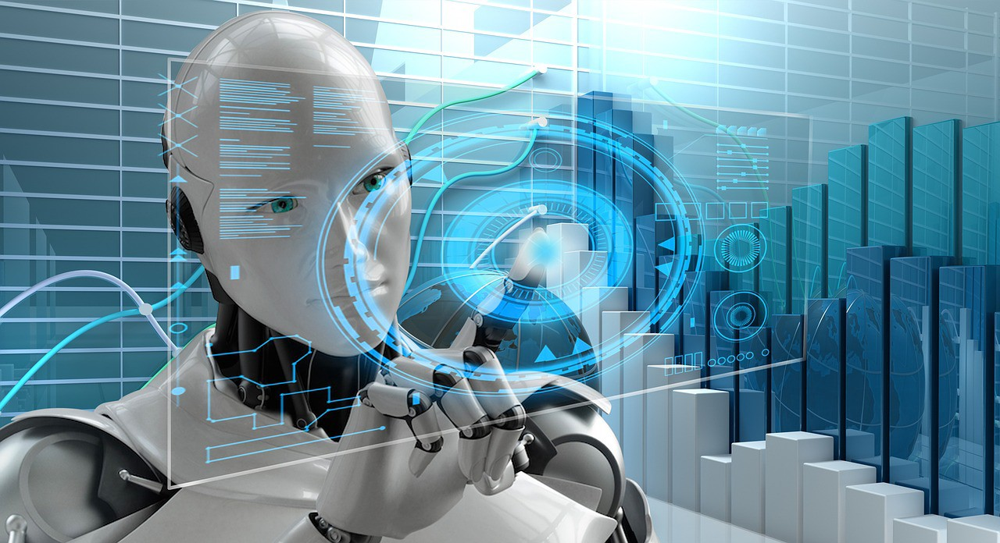

El avance tecnológico de la inteligencia artificial es, según expertos y
científicos, el avance que potenciará las capacidades humanas. Por otro lado,
este avance para muchos es visto como un riesgo para la civilización tal y como
lo conocemos hoy en día. Está claro que existen razones para pensar que el
desarrollo de la inteligencia artificial, sin ningún tipo de restricciones ni
regulaciones, puede acarrear consecuencias tanto por el mal uso como por la
propia tecnología en sí misma.

Para hablar de futuro, es necesario hablar de la Inteligencia Artificial Débil que realiza tareas programadas sin necesidad de tener estados mentales y la Inteligencia Artificial Fuerte que no imita procesos de la mente humana, sino que es una mente humana. Esta última, hasta el momento, es imposible de diseñar por lo que cuando hablamos de futuro, hablamos de la evolución de la inteligencia artificial general que es capaz de realizar distintos procesos imitando el comportamiento humano.
La inteligencia artificial trabaja con representaciones abstractas del mundo real pero se considera que esta avanza hacia una IA bioinspirada donde no solo se tiene que imitar el comportamiento de un humano si no que tiene que parecerse a este.
En el comportamiento humano no solo influyen los pensamientos, también influyen los sentimientos hacia otros. Esto todavía no puede ser imitable por lo que el futuro de la inteligencia artificial parece estar ligado a ser un complemento a las actividades que realizan los humanos.
En un futuro hipotético pero no próximo, debido a la complejidad del cerebro
humano, hablaremos de la aparición de superinteligencias artificiales. Estas
serían capaces de tener conciencia propia y superarían la inteligencia racional
humana.